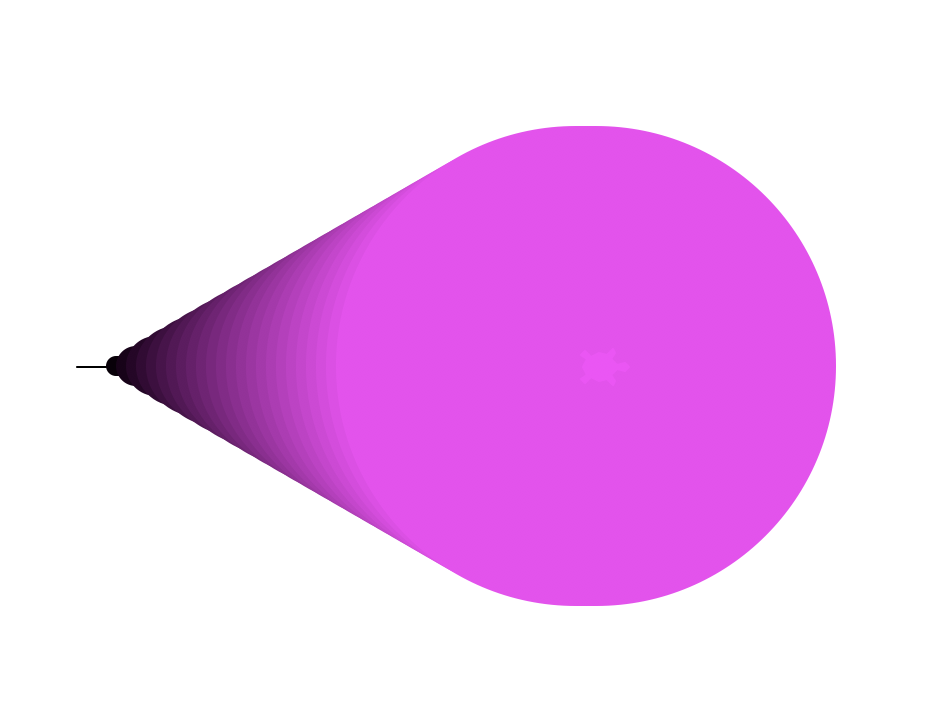
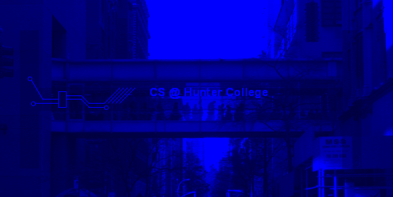
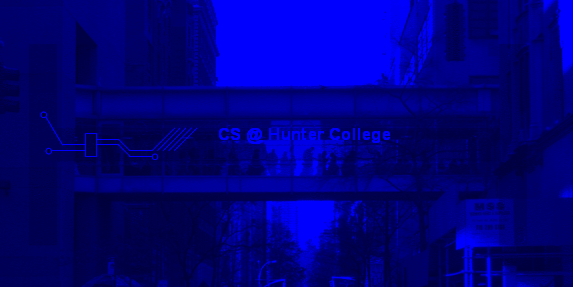
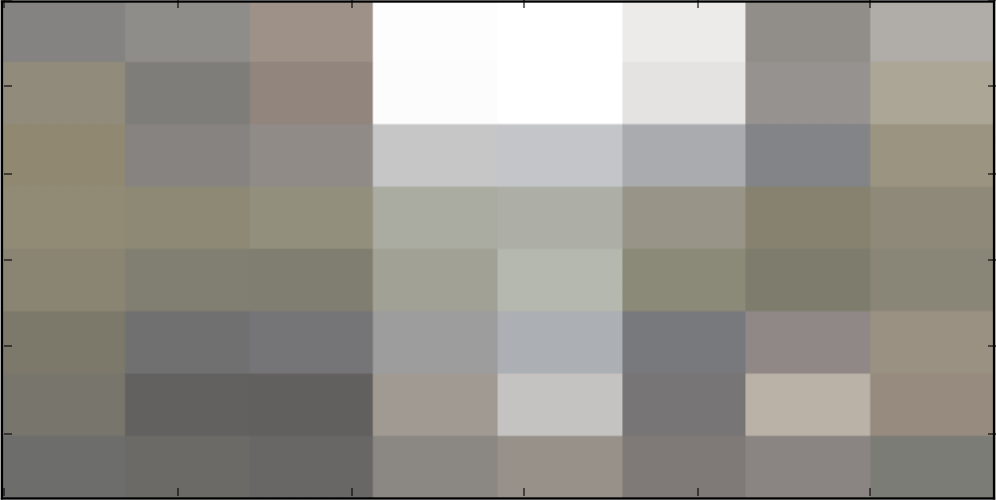
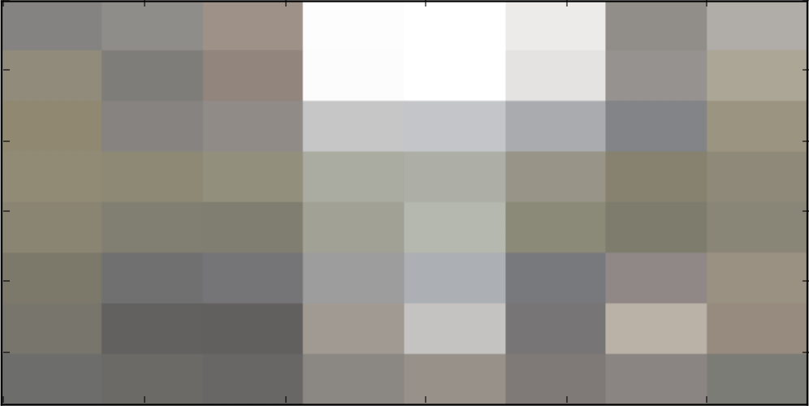
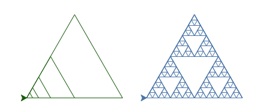

Programming Problem List
CSCI 127: Introduction to Computer Science
Hunter College, City University of New York
Spring 2025
All students registered by Tuesday, January 21, are sent a Gradescope registration invitation to the email on record on their Brightspace account. If you did not receive the email or would like to use a different account, fill in the form on Brightspace. Include that you not receive a Gradescope invitation, your preferred email, and your EmpID. We will manually generate an invitation. As a default, we use your name as it appears in Brightspace/CUNYFirst (to update CUNYFirst, see changing your personal information). If you prefer a different name for Gradescope, include it, and we will update the Gradescope registration.
General Notes
Learning programming is like learning a foreign language: you will learn more (with less work) if you practice every day. Some of the programs below are easy; some will take more time. We suggest you set aside a block of time most days to work on programming and the course.
The programs build on the concepts and code developed during lecture, lab, and through the reading. Mastery of material is assessed via
- Autograding of the programs submitted to Gradescope,
- Written quizzes based on the programs and labs,
- Code Reviews based on the programs, and
- Final exam on the material.
Autograder Notes
The majority of the programs this semester are written in Python (see Lab 1 for getting started with Python); it is noted below when other formats or languages are used. For Python programs, the autograder expects a .py file, using only the specified libraries, and does not accept iPython notebooks. Since all assignments are designed to be uploaded as a single file, the autograder is set up for direct file upload instead of Github. If submitting directly (drop-and-drag onto the webpage), the file name is flexible but must have the extension .py.
Also, to receive full credit, the code should be compatible with Python 3.10 (the default for the Gradescope autograders).
To get full credit for a program, the file must include in the opening comment:
- Your name, as it appears in your Gradescope registration.
- The email you are using for Gradescope.
"""
Name: Thomas Hunter
Email: thomas.hunter1870@hunter.cuny.edu
Date: February 1, 2025
This program prints: Hello, Thomas Hunter
"""
print("Hello, Thomas Hunter")
You may submit your assignments up to three weeks before the due date and are encouraged to work ahead. To receive credit, assignments must be submitted by the deadline to Gradescope. For more information on using Gradescope, see Lab 1.
Since Gradescope gives limited feedback, run your program first locally (on your computer or a lab computer) where the compiler messages will pinpoint errors and help debug your code. For example, if Gradescope gives you a "The autograder failed to execute..." error, it means your program has an error (in this case, it's usually the file contains non-Python commands.). The local Python compiler will give the line of your file with the error, where Gradescope will only say that there's a general problem. For more information on installing Python on your computer, see the installation guides.
Programming Exercises
-
Due Date: 5pm, Monday, February 3
Reading: Chapter 1 & Lab 1
Available Libraries: Python 3.10+Hello
Write a program that prints
Hellofollowed by your name to the screen. For example, if your name isThomas Hunter, when your program is run, it would print:Hello, Thomas Hunter -
Due Date: 5pm, Tuesday, February 4
Reading: Chapter 4 & Lab 1
Available Libraries: turtle, Python 3.10+Triangle
Write a program that draws a triangle using the
turtlelibrary.
Note: Whenever submitting a turtle program, choose a name for your file that is not turtle.py. When executing the "import turtle" statement, the computer first looks in the folder where the file is saved for the turtle module and then in the libraries (and other places on the path). So, it thinks the module is itself, causing all kinds of errors. To avoid this, name your program something like "myTurtle.py" or "program2.py". -
Due Date: 5pm, Thursday, February 6
Reading: Chapter 4 & Lab 1
Available Libraries: turtle, Python 3.10+Flower
Write a program that implements the pseudocode ("informal high-level description of the operating principle of a computer program or other algorithm") below:
Repeat 50 times: Change color to blue Walk forward 100 steps Turn left 155 degrees Change color to red Walk forward 100 stepsThe result should look as follows:

-
Due Date: 5pm, Friday, February 7
Reading: Chapter 1 & Lab 1
Available Libraries: Python 3.10+Multiple Greetings
Write a program that will print
Hi & Byemultiple times. The number of times depends on your EmplID number. Take the last digit of your EmplID number and add 10. For example, if your EmplID ends in 3, the number of times you repeat the message is 3+10 = 13.For example, with an EmplID ending in 7, you would repeat the message 17 times:
Hi & Bye Hi & Bye Hi & Bye Hi & Bye Hi & Bye Hi & Bye Hi & Bye Hi & Bye Hi & Bye Hi & Bye Hi & Bye Hi & Bye Hi & Bye Hi & Bye Hi & Bye Hi & Bye Hi & Bye -
Due Date: 5pm, Tuesday, February 11
Reading: Chapter 4 & Lab 1
Available Libraries: turtle, Python 3.10+Green Star
Write a program that uses the turtle library to draw a green 5-pointed star.
Your output should look like this:
Hint: To draw the 5-pointed star, the turtle must turn a total of 720 degrees. How many degrees does the turtle need to turn at each point?
-
Due Date: 5pm, Thursday, February 13
Reading: Chapter 2 & Lab 2
Available Libraries: Python 3.10+Upper & Lower
Using the string commands introduced in Lab 2, write a Python program that prompts the user for a message, and then prints the message, the message in upper case letters, and the message in lower case letters.
A sample run of your program should look like:
Enter a message: Mihi cura futuri Mihi cura futuri MIHI CURA FUTURI mihi cura futuriAnother run:
Enter a message: I love Python! I love Python! I LOVE PYTHON! i love python!Hint: Your program should be able to take any phrase the user enters and prints it, prints it in upper case letters, and prints it in lower case letters. To do that, you need to store the phrase in a variable and print variations of the stored variable. See Sections 2 and 3 of Lab 2.
-
Due Date: 5pm, Friday, February 14
Reading: Chapter 2 & Lab 2
Available Libraries: Python 3.10+Uppercase ASCII
Write a program that prompts the user to enter a phrase, converts the phrase to uppercase, and then prints out each uppercase character and its corresponding ASCII code.
A sample run of your program should look like:
Enter a phrase: ABC A 65 B 66 C 67And another sample run:
Enter a phrase: abc A 65 B 66 C 67Another run, with a longer phrase:
Enter a phrase: I love Python! I 73 32 L 76 O 79 V 86 E 69 32 P 80 Y 89 T 84 H 72 O 79 N 78 ! 33Hint: The first step is to ask the user for input (see Section 2 of Lab 2). If c is a character, ord(c) returns its ASCII code. For example, if c is 'I', then ord(c) returns 73. See Lab 2.
-
Due Date: 5pm, Wednesday, February 19
Reading: Chapter 2 & Lab 2
Available Libraries: Python 3.10+Counting by 25's
Write a program that prints out the numbers from 1000 to 2000, counting by twentyfives.
The output of your program should be:
1000 1025 1050 1075 1100 1125 1150 1175 1200 1225 1250 1275 1300 1325 1350 1375 1400 1425 1450 1475 1500 1525 1550 1575 1600 1625 1650 1675 1700 1725 1750 1775 1800 1825 1850 1875 1900 1925 1950 1975 2000 -
Due Date: 5pm, Thursday, February 20
Reading: Chapter 4 & Lab 2
Available Libraries: turtle, Python 3.10+Twisting Square
Write a program, using the turtle library, that implements the pseudocode below:
For i = 20, 22, 24, 26, ... ,100: Walk forward i steps Turn right 93 degreesYour output should look similar to:
Hint: See examples of range(start,stop,step) in Section 4 of Lab 2.
-
Due Date: 5pm, Friday, February 21
Reading: Chapter 2 & Lab 2
Available Libraries: Python 3.10+Acronyms
Write a program that prompts the user for a phrase and creates an acronym, consisting of the first letters of each word, in uppercase.
To approach a problem, it is useful to break it into steps:
- Prompt for a phrase & read it into a variable.
- Make the phrase upper case.
- Print the phrase.
- Split up the phrase into words.
- Take the first letter of each word (keep in mind that split() returns a list of the words ), concatenate and make an acronym of it.
- Print the acronym.
Now translate the above pseudocode (informal but detailed description of the steps in a program) into python and test that your program works as follows:
Enter a phrase: City University New York Your phrase in capital letters: CITY UNIVERSITY NEW YORK Acronym: CUNYAnd another run:
Enter a phrase: Hunter College Your phrase in capital letters: HUNTER COLLEGE Acronym: HCHint: See examples of looping throught strings in Section 3 of Lab 2.
-
Due Date: 5pm, Tuesday, February 25
Reading: Chapter 2 & Lab 2
Available Libraries: Python 3.10+Name List
Write a program that prompts the user to enter a list of names. Each person's name is separated from the next by a semi-colon and a space ('; ') and the names are entered lastName, firstName (i.e. separated by ', '). Your program should then print out the names, one per line, with the first initial of the first name, followed by ".", and followed by the last name.
A sample run of your program should look like:
Please enter your list of names: Lovelace, Ada; Fleming, Williamina; Hopper, Grace; Easley, Annie; Wilkes, Mary Allen A. Lovelace W. Fleming G. Hopper A. Easley M. Wilkes Thank you for using my name organizer!Hint: See Section 10.24 for a quick overview of split(). Do this programin parts: first, split the list by person (what should the delimiter be?). Then, split each of person's name into first and last name (what should the delimiter be here?). If you have a string str, what is s = str[0] + "."?
-
Due Date: 5pm, Wednesday, February 26
Reading: Chapter 4 & Lab 3
Available Libraries: turtle, Python 3.10+Shades of Purple
Modify the program from Lab 3 to show the shades of purple.
Your output should look similar to:

-
Due Date: 5pm, Thursday, February 27
Reading: Chapter 2 & Lab 2
Available Libraries: Python 3.10+String Lengths
Write a program that asks the user for a phrase, and prints out the length. Your program should repeat this for 4 more phrases (a total of 5 phrases):
The output of your program should be:
Enter phrase: This is my letter to the World 30 Enter phrase: That never wrote to Me- 23 Enter phrase: The simple News that Nature told- 33 Enter phrase: With tender Majesty 19 Enter phrase: Emily Dickinson 15 -
Due Date: 5pm, Friday, February 28
Reading: Chapter 2, Chapter 4 & Lab 3
Available Libraries: turtle, Python 3.10+Color Stamps
Write a program that asks the user for a color in hexadecimal notation, moves a turtle forward 20 steps, and then stamps out that color using the turtle library. Your program should repeat this for 4 more colors in hexadecimal notation (a total of 5 turtle stamps and moves forward).
For example, if you ran your program and the user entered:
Enter color (as hex): #0000FF Enter color (as hex): #0000B8 Enter color (as hex): #000087 Enter color (as hex): #000043 Enter color (as hex): #000011The output would be:
-
Due Date: 5pm, Tuesday, March 4
Reading: Chapter 2, Chapter 4 & Lab 3
Available Libraries: matplotlib, numpyBlue Channel
Write a program that asks the user for a name of an image .png file and the name of an output file. Your program should create a new image that has only the blue channel of the original image.
A sample run of your program should look like:
Enter name of the input file: csBridge.png Enter name of the output file: blueH.pngSample input and resulting output files:
 

Note: before submitting your program for grading, remove the commands that show the image (i.e. the ones that pop up the graphics window with the image). The program is graded on a server on the cloud and does not have a graphics window, so, the plt.show() and plt.imshow() commands will give an error. Instead, the files your program produces are compared pixel-by-pixel to the answer to check for correctness.
Hint: See Lab 3.
-
Due Date: 5pm, Wednesday, March 5
Reading: Section 2.8, Chapter 4 & Lab 3
Available Libraries: turtle, Python 3.10+Turning Turtle
Write a program that asks the user for 5 whole (integer) numbers. For each number, turn the turtle left the degrees entered and then the turtle should move forward 100.
A sample run of your program should look like:
Enter a number: 270 Enter a number: 100 Enter a number: 190 Enter a number: 200 Enter a number: 80and the output should look similar to:
-
Due Date: 5pm, Thursday, March 6
Reading: Section 2.7 & Lab 4
Available Libraries: Python 3.10+Making Change
Write a program that implements the pseudocode below:
1. Ask the user for the number of cents as an integer (e.g. 99 not 0.99). 2. Print out the number of quarters (quarters = cents // 25). 3. Compute the remaining change (rem = cents % 25). 4. Print out the number of dimes (dimes = rem // 10). 5. Compute the remaining change (rem = rem % 10). 6. Print out the number of nickels (nickels = rem // 5). 7. Print out the remaining cents (cents = rem % 5).
Be sure to print how many of each coin type in the given order (quarters, followed by dimes, followed by nickels, followed by cents) each on a new line.
A sample run of your program should look like:
Enter the number of cents: 99 Quarters: 3 Dimes: 2 Nickels: 0 Cents: 4and another sample run:
Enter the number of cents: 62 Quarters: 2 Dimes: 1 Nickels: 0 Cents: 2Hint: See Section 2.7.
-
Due Date: 5pm, Friday, March 7
Reading: Chapter 2, Chapter 7 & Lab 4
Available Libraries: Python 3.10+DNA
We can store DNA sequences as strings. These strings are made up of the letters A, C, G, and T. For a given DNA string, the GC-content is the percent of the string that is C or G, written as a decimal.
Write a program that prompts the user for a DNA string, and then prints the length and GC-content of that string.
A sample run of the program:
Enter a DNA string: ACGCCCGGGATG Length is 12 GC-content is 0.75Hint: You can use a for-loop to go through each character in the string, and count each time you encounter a 'C' or 'G'. You can use an if-statment to check what kind of character the loop is currently on. Alternatively, you can use the count() method introduced in Lab 2 to get the total occurrences of 'C' and 'G' in the string.
-
Due Date: 5pm, Monday, March 10
Reading: Section 8.11 & Lab 4
Available Libraries: matplotlib, numpyTopo Map
Modify the map-making program from Lab 4 to create a topographic map (highlighting the points that have elevations that are multiples of 10) and the coastline. Your program should ask the user for the amount of intensity (a floating point number between 0.0 and 1.0), the name of the output image, and create a new image with that name and with the pixels colored as follows:
- If the elevation is less than or equal to 0, the pixel should be colored blue (0% red, 0% green, and 100% blue).
- If the elevation is not 0 but divisible by 10, color the pixel gray (amt red, amt green, and amt blue) where amt is the amount of intensity entered by the user.
Otherwise, the pixel should be colored white (100% red, 100% green, and 100% blue).
-
Due Date: 5pm, Tuesday, March 11
Reading: Section 10.23, Chapter 4 & Lab 4
Available Libraries: Python 3.10+Names with Spaces
Write a program that identifies names that may cause issue with formatting for subsequent programs. Your program should ask the user for the last names separated by commas, and prints out a list with all the names in the list that contain spaces.
For example, if you ran your program and the user entered:
Enter names, separated by commas: Smith,Wong,St. John,Von Trapp A list of names with spaces: ["St. John", "Von Trapp"]Hint: See Section 4 in Lab 4.
-
Due Date: 5pm, Wednesday, March 12
Reading: Section 8.11 & Lab 4
Available Libraries: numpy, matplotlib, imageLogo
Write a program that creates a 'C' logo for CUNY on a 30x30 grid.

The grading script is expecting:
- The file to be saved as: logo.png.
- The grid to be 30 x 30.
- The 'C' to be 0% red, 0% green, and 100% blue. The upper part of the 'C' should be the top third of the image; the left part of the 'C' should be the left third of the image; and the lower part of the 'C' should be the the bottom third of the image.
- The remaining pixels in the image should be white (100% red, 100% green, and 100% blue).
Note: before submitting your program for grading, remove the commands that show the image (i.e. the ones that pop up the graphics window with the image). The program is graded on a server on the cloud and does not have a graphics window, so, the plt.show() and plt.imshow() commands will give an error. Instead, the files your program produces are compared pixel-by-pixel to the answer to check for correctness.
-
Due Date: 5pm, Thursday, March 13
Reading: Burch's Logic & Circuits& Lab 5
Available Libraries: N/ANAND Gate
Build a circuit that has the same behavior as a nand gate (i.e. for the same inputs, gives identical output) using only and, or, and not gates.

Save your expression to a text file. See Lab 5 for the format for submitting logical expressions to Gradescope.
-
Due Date: 5pm, Friday, March 14
Reading: Burch's Logic & Circuits& Lab 5
Available Libraries: N/AMajority Circuit
Write a logical expression that is equivalent to the circuit that computes the majority of 3 inputs, called in1, in2, in3:
- If two or more of the inputs are True, then your expression should evaluate to True.
- Otherwise (two or more of the inputs are False), then your expression should evaluate to False.

Save your expression to a text file. See Lab 5 for the format for submitting logical expressions to Gradescope.
-
Due Date: 5pm, Monday, March 17
Reading: Chapter 7, Chapter 11, & Lab 4
Available Libraries: turtleTurtle String
- 'F': moves the turtle forward 50 steps
- 'L': turns the turtle 90 degrees to the left
- 'R': turns the turtle 90 degrees to the right
- '^': lifts the pen
- 'v': lowers the pen
- 'B': moves the turtle backwards 50 steps
- 'S': makes the turtle stamp
- 'r': change the pen color to red
- 'b': change the pen color to black
- 'T': change the pen size to 10 (thick lines)
- 't': change the pen size to 1 (thin lines)
-
Due Date: 5pm, Tuesday, March 18
Reading: Burch's Logic & Circuits & Lab 5
Available Libraries: N/ABinary Number Incrementer
Logical gates can be used to do arithmetic on binary numbers. For example, we can write a logical circuit whose output is one more than the inputted number. Our inputs are in1 and in2 and the outputs are stored in out1, out2, and out3.

Here is a table of the inputs and outputs:
Inputs Outputs Decimal
Numberin1 in2 Decimal
Numberout1 out2 out3 0 0 0 1 0 0 1 1 0 1 2 0 1 0 2 1 0 3 0 1 1 3 1 1 4 1 0 0 Submit a text file with each of the outputs on a separate line:
""" Name: YourNameHere Date: March 2025 Logical expressions for a 4-bit incrementer """ out1 = ... out2 = ... out3 = ...
Where "..." is replaced by your logical expression (see Lab 5 for hints and formatting help).Note: here's a quick review of binary numbers.
-
Due Date: 5pm, Wednesday, March 19
Reading: Lecture 4, Numpy Tutorial
Available Libraries: numpy, image, matplotlibStripes
Create a program that creates a image of blue and white stripes. Your program should ask the user for the size of your image, the name of the output file, and create a .png file of stripes. For example, if the user enters 50, your program should create a 50x50 image, alternating between blue and white stripes.
Your output should look similar to this:
Enter the size: 50 Enter output file: stripes50.png
The resulting image is saved to stripes50.png:
Your output should look similar to this:
Enter the size: 25 Enter output file: stripes25.png
The resulting image is saved to stripes25.png:
Note: before submitting your program for grading, remove the commands that show the image (i.e. the ones that pop up the graphics window with the image). The program is graded on a server on the cloud and does not have a graphics window, so, the plt.show() and plt.imshow() commands will give an error. Instead, the files your program produces are compared pixel-by-pixel to the answer to check for correctness.
Hint: See notes from Lecture 4.
-
Due Date: 5pm, Thursday, March 20
Reading: 10-mins to Pandas, DC Pandas, Lab 6
Available Libraries: pandasMinimal Temperatures
In Lab 6, we wrote a program that computed the average rainfall from Australian weather data. Modify the program to ask the user for the name of a CSV file and then to print out, using the data from the CSV file:
- The lowest temperature recorded across all locations and dates.
- The lowest temperature for each location across all dates.
For example, running the program on rain_A.csv (a smaller version of the CSV file from the lab that's contains only the cities that start with 'A'):
Enter CSV file name: rain_A.csv Overall min temp: -5.2 Minimum temperature by location: Location Adelaide 0.7 Albany 1.8 Albury -2.8 AliceSprings -5.2
-
Due Date: 5pm, Friday, March 21
Reading: 10-mins to Pandas, DC Pandas, Lab 6
Available Libraries: pandas, 3.10+Double Recipe
Using pandas, write a program that asks the user for a recipe (in comma separated value (CSV) format), reads in the corresponding CSV file and prints out quantities and ingredients needed to make a double batch. Assume that the CSV files have the columns: "Amount", "Measurement", and "Ingredient".
For example if the CSV file, meringues.csv, contained:
Amount Measurement Ingredient 150 grams chocolate chips 4 whites of eggs .25 teaspoon vanilla .25 teaspoon cream of tartar A sample run of your program would be:
Enter recipe name: meringues.csv Double your recipe is: Amount Measurement Ingredient 0 300.0 grams chocolate chips 1 8.0 whites of eggs 2 0.5 teaspoon vanilla 3 0.5 teaspoon cream of tartar
Due Date: 5pm, Monday, March 24
Reading: GitHub Guide, Lab 6
Available Libraries: N/AGitHub
In Lab 6, you created a GitHub account. Submit a text file with the name of your account. The grading script is expecting a file with the format:
""" Name: Your_name Email: Your_eamil Account name for my GitHub account """" AccountNameGoesHere
Note: it takes a few minutes for a newly created GitHub account to be visible. If you submit to Gradescope and get a message that the account doesn't exist, wait a few minutes and try again.
Due Date: 5pm, Tuesday, March 25
Reading: Lab 6, Ubuntu Terminal Reference
Available Libraries: N/AHello (Shell Script)
Write a shell script that prints Hello, World to the screen.
Submit a single text file containing your Unix shell commands. See Lab 6 for details.
Note: for comments, shell scripts use # in front of lines (instead of the block comments surrounded by """ """) and the first line is the "shebang" line. For a proper shell script, your file should start:
#!/bin/bash #Name: YourNameHere #Email; YourEmailHere
Due Date: 5pm, Wednesday, March 26
Reading: Chapter 7, Lab 7
Available Libraries: 3.10+Binary to Decimal Converter
Write a program that implements the pseudcode below. Your program should ask the user for a binary number and print out the corresponding decimal number.
Ask user for input, and store in the string, bin_string. Set dec_num = 0. For each c in bin_string, dec_num = dec_num * 2 if c is 1, then dec_num = dec_num + 1 Print dec_num
A sample run of the program:
Enter binary number: 10 Your number in decimal is 2
And another sample run of the program:
Enter binary number: 1111 Your number in decimal is 15
Hint: Remember that c is the index variable that's looping through a string, and is a character, not an int. To check that it holds the value 1, you need to compare it as strings (e.g. c == '1') or cast to an integer (e.g. int(c) == 1).
Due Date: 5pm, Thursday, March 27
Reading: Think CS Chapter 6 and Chapter 7
Available Libraries: matplotlib, image, numpyImage Cropping
Write a program that asks the user for a choice:
- If the choice is 'l' or 'L', then ask for the name of an input and output file. Your program should then save the left half of the input file image to the output file specified by the user.
- If the choice is 'r' or 'R', then ask for the name of an input and output file. Your program should then save the right half of the input file image to the output file specified by the user.
For example, using the file
Would you like the left or right half (L/R): L Enter input file name: csBridge.png Enter output file name: leftBridge.png
which would have as input and output:
Another sample run of your program should look like:
Would you like the left or right half (L/R): r Enter input file name: Octocat.png Enter output file name: right_cat.png
which would have as input and output:

When entering any other string, here is an output:
Would you like the left or right half (L/R): yes Error: not a valid choice
Hint: See sample programs from Lectures 4 and 6. When the input is other than 'L', 'l', 'R' or 'r', print "Error" and exit the program. Otherwise, enter the input file name and output file name, then depending on the choice (either top or bottom), cut the image and save the portion to the output file.
Note: before submitting your program for grading, remove any commands that show the image (i.e. the ones that pop up the graphics window with the image). The program is graded on a server on the cloud and does not have a graphics window, so, the plt.show() and plt.imshow() commands will give an error. Instead, the files your program produces are compared pixel-by-pixel to the answer to check for correctness.
Due Date: 5pm, Friday, March 28
Reading: Section 7.4 and Lab 7
Available Libraries: 3.10+Timely Greetings
Write a program that asks the user for the hour of the day (in 24 hour time), and prints:
- "Good Morning" if it is strictly before 12,
- "Good Afternoon" if it is 12 or greater, but strictly before 17, and
- "Good Evening" otherwise.
A sample run:
Enter hour (in 24 hour time): 11 Good Morning
Another sample run:
Enter hour (in 24 hour time): 20 Good Evening
And another run:
Enter hour (in 24 hour time): 15 Good Afternoon
Due Date: 5pm, Tuesday, April 1
Reading: Section 6.8, Section 7.4 and Lab 7
Available Libraries: 3.10+URL Domains
Write a program, using function main() that input a website URL like www.apple.com or hunter.edu. Find out the website name and its top level domain type. If top level domain is com, print "commercial", otherwise, if top level domain is edu, print "education", otherwise, if top level domain is org, print "organization", otherwise, if top level domain is gov, print "government", otherwise, print "other". See Lab 7.
A sample input/output is as follows.
Enter a website URL: chat.openai.com website name: openai commercial
Another sample input/output is as follows.
Enter a website URL: hunter.edu website name: hunter education
Yet another sample input/output uses air force website as an example.
Enter a website URL: www.af.mil website name: af other
Hint: You may need to consider a website can be in either form: www.websiteName.com or websiteName.com, so use the negative index (e.g. count from the end, instead of the beginning) to extract website or domain after split by '.'.
Due Date: 5pm, Wednesday, April 2
Reading: 10-mins to Pandas, DC Pandas, Lab 7
Available Libraries: pandas, 3.10+Ticket Binning
Modify the parking ticket program from Lab 7 to do the following:
- Ask the user for the name of the input file.
- Ask the user for the attribute (column header) to search by.
A sample run:
Enter file name: Parking_Violations_Jan_2016.csv Enter attribute: Vehicle Color The 10 worst offenders are: WHITE 2801 WH 2695 GY 1420 BK 1153 BLACK 1054 BROWN 727 BL 656 GREY 574 SILVE 450 BLUE 412 Name: Vehicle Color, dtype: int64
And another run:
Enter file name: Parking_Violations_Jan_2016.csv Enter attribute: Vehicle Year The 10 worst offenders are: 0 3927 2015 1265 2014 1143 2013 1105 2012 772 2011 666 2007 643 2008 559 2010 509 2006 499 Name: Vehicle Year, dtype: int64
Due Date: 5pm, Thursday, April 3
Reading: Chapter 2, Chapter 4 & Lab 8
Available Libraries: matplotlib, numpyAveraging Images
Fill in the missing functions:
- average(region): Takes a region of an image and returns the average red, green, and blue values across the region.
- setRegion(region,r,g,b): Takes a region of an image and red, green, and blue values, r, g, b. Sets the region so that all points have red values of r, green values of g, and blue values of b.
The functions are part of a program that averages smaller and smaller regions of an image until the underlying scene is visible (inspired by the elegant koalas to the max).
For example, if you inputted our favorite image, you would see (left to right):


 



and finally:
A template program, averageImage.py, is available here. You should use this file to get started with your program.
The grading script does not run the whole program, but instead runs each of your functions separately ('unit tests') to determine correctness. As such, the names of the functions must match exactly the ones listed above (else, the scripts cannot find them).
Due Date: 5pm, Friday, April 4
Reading: 10-mins to Pandas, DC Pandas, Lab 7
Available Libraries: pandas, 3.10+School Enrollment
Download csv file from 2013 to 2018 Demographic Snapshot Borough. Your program should ask the user for the borough, an name for the output file, and then display the fraction of Grade K to 6 enrollment that has lived in that borough, over time. Then print out the minimum, maximum, median, mean, and stand deviation of total enrollment in that borough (round to 3 decimal numbers).
A sample run of the program:
Enter borough name: Bronx Enter output file name: bronxFraction.png minimum of total enrollment for Bronx is 233588 maximum of total enrollment for Bronx is 241986 median of total enrollment for Bronx is 239955.0 mean of total enrollment for Bronx is 239283.0 stand deviation of total enrollment for Bronx is 3407.191
The file bronxFraction.png:

Hint: First create a column that calculate the fraction of Grade K to 6 vs. Total Enrollment. Then get borough data usig either groupby and get_group function or query method. You can test both approaches. Suppose the original data frame is saved in variable df and the input borough name is put in variable borough.
borough_data = df.query("Borough == '" + borough + "'")Then borough_data has data for the specific borough. Plot fraction using this data.
Note: before submitting your program for grading, remove the commands that show the image (i.e. the ones that pop up the graphics window with the image). The program is graded on a server on the cloud and does not have a graphics window, so, the plt.show() and plt.imshow() commands will give an error. Instead, the files your program produces are compared pixel-by-pixel to the answer to check for correctness.
Due Date: 5pm, Monday, April 7
Reading: Think CS Chapter 6 and Lab 8
Available Libraries: turtlePolygons
Write function polygon, which takes four parameters: a turtle, number of edges, edge length, and color as a string. The functionality of polygon uses turtle object to draw a polygon with number of edges, each edge has edge length, the polygon is in color, where color can be specified in name like "red" or using a hexadecimal representation such as "#00ffff" (green + blue = cyan).
The code of function main to test polygon is as follows:
def main(): tess = turtle.Turtle() polygon(tess, 5, 100, "green") polygon(tess, 6, 60, "#ff00ff") polygon(tess, 7, 70, "#ff0000") turtle.done() if __name__ == '__main__': main()
The above main function produces the following figure.
Hint: See Lecture 1 for the general recipe for drawing polygons.
Due Date: 5pm, Tuesday, April 8
Reading: Chapter 12 & Lab 8
Available Libraries: 3.10+Unique Visitors
When students visit the lab, their EmpID is stored as an 8-digit string. Many students visit multiple times, but we are interested in the total number of unique visitors to the lab. Write a function unique_visitors() that takes a list of 8-digit strings and returns the number of unique strings that occur.
For example:
ids = ['12345678','11223344','12312323','12345678'] print("The number of unique visitors is ", unique_visitors(ids))would print:The number of unique visitors is 3
since there are 4 entries but the first and fourth entries are duplicates of each other.Note: The grading script does not run the whole program, but instead tests your function separately ('unit tests') to determine correctness. As such, the function name must match exactly (else, the scripts cannot find it). Before submitting your program for grading, remove any commands that are outside a function definition. To test the function you wrote, we import your file and then call the function directly. Code outside of function definitions will give compilation errors and prevents the tests from completing (giving a grade of 0). If you have extra code for testing and such, either comment it out before submitting, or use conditional execution (see Lab 7).
Hint: Use a dictionary to store the IDs and return the length of the dictionary.
Due Date: 5pm, Wednesday, April 9
Reading: Chapter 12 & Lab 8
Available Libraries: 3.10+Duplicate Names
Write a function duplicates() that takes a list of names and returns a list with the names that occurred more than once.
For example:names = ['Daniel','Dorothy','Bethany','Beth','Daniel','Georgi'] print(duplicates(names))
would return the list ['Daniel'] since it's the only name that occurred twice.Note: The grading script does not run the whole program, but instead tests your function separately ('unit tests') to determine correctness. As such, the function name must match exactly (else, the scripts cannot find it). Before submitting your program for grading, remove any commands that are outside a function definition. To test the function you wrote, we import your file and then call the function directly. Code outside of function definitions will give compilation errors and prevents the tests from completing (giving a grade of 0). If you have extra code for testing and such, either comment it out before submitting, or use conditional execution (see Lab 7).
Hint: Use a dictionary to count how many times you see each name. When adding a name to the dictionary a second time, append to a list of duplicated names.
Due Date: 5pm, Thursday, April 10
Reading: Think CS Chapter 6 and Lab 8
Available Libraries: turtleNested Triangles
Write two functions, triangle() and nestedTriangle(). Both functions take three parameters: a turtle, an edge length, and a scale. The pseudocode for triangle() is:
triangle(t, length, scale): 1. If length > scale: 2. Repeat 3 times: 3. Move t, the turtle, forward length steps. 4. Turn t left 120 degrees. 5. Call triangle with t, length/2, and scale.
The pseudocode for nestedTriangle() is very similar:
nestedTriangle(t, length, scale): 1. If length > scale: 2. Repeat 3 times: 3. Move t, the turtle, forward length steps. 4. Turn t left 120 degrees. 5. Call nestedTriangle with t, length/2, and scale.
A template program, nested.py, is available on GitHub or on our website: nested.py. The grading script does not run the whole program, but instead tests your function separately ('unit tests') to determine correctness. As such, the function names must match exactly (else, the scripts cannot find it). Make sure to use the function names from the GitHub program (it is expecting triangle() and nestedTriangle()).
A sample run:
Enter edge length: 160 Enter scale: 10
which would produce:

If we change the scale, we change the amount of nesting
Enter edge length: 160 Enter scale: 5
which would produce:

Due Date: 5pm, Monday, April 21
Reading: Lab 9
Available Libraries: 3.10+Finding Errors
Lab 9 works through finding and fixing errors in a Python program. Fix all of the errors in the file errorsHex.py and then upload the file to Gradescope.
Due Date: 5pm, Tuesday, April 22
Reading: Think CS Chapter 6 and Lab 9
Available Libraries: turtleHurricane Tracker

This program asks that you fill in the missing function to animate hurricane data (inspired by the 2018 Nifty Hurricane Program by Phil Ventura). Your function, animate(t,lat,lon,wind) takes as input:
- t: a turtle,
- lat: an integer storing the current latitude,
- lon: an integer storing the current longitude, and
- wind: the current wind speed in miles per hour.
Your function should move to the turtle to the current location (longitude, latitude), and then based on the Saffir-Simpson Hurricane Wind Scale, change the turtle to be:
- red and pen size 5 for Category 5 (windspeed > 157 mph)
- orange and pen size 4 for Category 4 (windspeed in 130-156 mph)
- yellow and pen size 3 for Category 3 (windspeed in 111-129 mph)
- green and pen size 2 for Category 2 (windspeed in 96-110 mph)
- blue and pen size 1 for Category 1 (windspeed in 74-95 mph)
- white and pen size 1 if not hurricane strength
Download the template program, hurricane.py. You will also need to download the background image, mapNASA.gif (link here), and put it in the same directory as hurricane.py.
The grading script does not run the whole program, but instead runs each of your functions separately ('unit tests') to determine correctness. As such, the names of the functions must match exactly the ones listed above (else, the scripts cannot find them).
Two test files (irma.csv and jose.csv) are from the Nifty site. Additional CSV files are available there.
Hint: You may find the following turtle commands useful: color(), goto(), and pensize().
Due Date: 5pm, Wednesday, April 23
Reading: 10-mins to Pandas,
DC Pandas, Plotly Maps, Lab 9
Available Libraries: pandas, plotlyCollisions Map
Using Plotly Express (see Lab 9), write a program that asks the user for the name of a CSV file, name of the output file, and creates a map with markers for all the traffic collisions from the input file. When the user hovers over the marker, the time of the accident should appear in the pop-up box.
A sample run:
Enter CSV file name: collisions.csv Enter output file: myMap.html
which would produce the HTML file:
This assignment uses collision data collected and made publicly by New York City Open Data. A sample file, collisionsThHunterBday.csv from 18 October 2016 was downloaded and can be used to test your program.
When running your program locally, you need to check that the "LATITUDE" and "LONGITUDE" values are non-empty. You can drop any row where there's empty values with:
df_cleaned = df.dropna()
Note: For this data set, the names of the columns are "LATITUDE" and "LONGITUDE" (unlike the previous map problem, where the data was stored with "Latitude" and "Longitude").
Due Date: 5pm, Thursday, April 24
Reading: 10-mins to Pandas, DC Pandas, Lab 6 & 8
Available Libraries: pandasAddress DataFrame
Write a function, make_addr_df() that has 3 input parameters:
- last_names: a string containing last names, separated by space,
- first_names: a string containing first names, separated by space,
- emails: a string containing emails, separated by space,
hc_last = "Hunter Raab Kirschner Cantor" hc_first = "Thomas Jennifer Anne Nancy" hc_email = "th1870@hunter.cuny.edu jr2001@hunter.cuny.edu ak2023@hunter.cuny.edu nc2024@hunter.cuny.edu" print(make_addr_df(hc_last, hc_first, hc_email))
will output:
Last First emails 0 Hunter Thomas th1870@hunter.cuny.edu 1 Raab Jennifer jr2001@hunter.cuny.edu 2 Kirschner Anne ak2023@hunter.cuny.edu 3 Cantor Nancy nc2024@hunter.cuny.edu
The grading script does not run the whole program, but instead runs your function separately ('unit tests') to determine correctness. As such, the name of the functions must match exactly the one listed above (else, the scripts cannot find it).
Hint: Use split() to create lists of each category entered. See Lab 8 for creating dataframes with dictionaries.
Due Date: 5pm, Friday, April 25
Reading: Think CS: Chapter 8 and Lab 10
Available Libraries: 3.10+Random Walk
Modify the program from Lab 10 that makes a turtle walk 250 times. Each "walk" is 5 steps forward and the turtle can turn 0,10,20,30,...,340,350 degrees (chosen randomly) at the beginning of each walk.
A sample run of your program:

Due Date: 5pm, Monday, April 28
Reading: Think CS: Chapter 8 and Lab 10
Available Libraries: 3.10+Validating Input
Write a program that asks the user to enter a string. If the user enters an empty string, your program should continue prompting the user for a new string until they enter a non-empty string. Your program should then print out the string entered.
A sample run of your program:
Enter a non-empty string: That was empty. Try again. Enter a non-empty string: That was empty. Try again. Enter a non-empty string: Mihi cura futuri You entered: Mihi cura futuri
Due Date: 5pm, Tuesday, April 29
Reading: 10-mins to Pandas, DC Pandas,
Plotly Maps, Lab 9
Available Libraries: pandas, plotlyHousing Map
TBA
Due Date: 5pm, Wednesday, April 30
Reading: Lab 10, Ubuntu Terminal Reference
Available Libraries: N/AOrganizing Files Script
Write an Unix shell script that does the following:
- Creates a directory, projectFiles.
- Creates 3 additional directories (as subdirectories of projectFiles): source, data, and results.
- Your script should then return the starting directory (e.g. use relative paths to move up a level) and move all files ending with .py to project_files/source.
Note: for comments, shell scripts use # in front of lines (instead of the block comments surrounded by """ """) and the first line is the "shebang" line. For a proper shell script, your file should start:
#!/bin/bash #Name: YourNameHere #Email: YourEmailHere
Due Date: 5pm, Thursday, May 1
Reading: Think CS Chapter 6 and Lab 8
Available Libraries: N/AString to Number
Write the function string2num() which takes a integer and returns the corresponding number as a string.
- If user gives a negative number or a number larger than 99, your function should return an empty string: "".
- Numbers larger than 20 are separated by space. For example, "twenty one" or "ninety nine".
A sample call of the function:
print("Converting fourteen to", string2num("fourteen")) Converting fourteen to 14And another example call of the function:
num_str = "sixty six" print("Converting, num_str, "to", string2num(num_str)) Converting sixty six to 66Hint: See Lectures 8 and 11 for related programs.
Note: The grading script does not run the whole program, but instead tests your function separately ('unit tests') to determine correctness. As such, the function name must match exactly (else, the scripts cannot find it). Before submitting your program for grading, remove any commands that are outside a function definition. To test the function you wrote, we import your file and then call the function directly. Code outside of function definitions will give compilation errors and prevents the tests from completing (giving a grade of 0). If you have extra code for testing and such, either comment it out before submitting, or use conditional execution (see Lab 7).
Due Date: 5pm, Friday, May 2
Reading: Think CS Chapter 6 and Lab 8
Available Libraries: N/ASearch
Due Date: 5pm, Tuesday, May 5
Reading: MIPS Wikibooks & Lab 11
Available Libraries: N/AMachine Language Hello
Write a simplified machine language program that prints: Hello!!!
See Lab 11 for details on submitting the simplified machine language programs.
Hint: You may find the following table useful:

(Image from wikimedia commons)Hint: The grading scripts are matching the phrase exactly, so, you need to include the spacing and punctuation.
Due Date: 5pm, Wednesday, May 6
Reading: MIPS Wikibooks & Lab 11
Available Libraries: N/AMachine Language Loop
Write a simplified machine language program that has register $s0 loop through the numbers 1, 3, 5, 7,..., 25.
See Lab 11 for details on submitting the simplified machine language programs.
Due Date: 5pm, Wednesday, May 7
Reading: Lab 12
Available Libraries: C++C++ Hello
Write a C++ program that prints "Hello, C++!" and also prints Hello followed by your name. These greetings should be printed on two separate lines to the screen. For example, if your name is
Thomas Hunter, when your program is run, it would print:Hello, C++! Hello, Thomas HunterHint: See Lab 12 for getting started with C++.
Due Date: 5pm, Thursday, May 8
Reading: Lab 4 & Lab 12
Available Libraries: C++Kilometers to Miles Converter
Write a C++ program that converts kilometers to miles. Your program should prompt the user for the number of kilometers and then print out the number of miles.
A useful formula: miles = 0.621371* kilometers.
See Lab 4 for designing Input-Process-Output programs and Lab 12 for getting started with C++.
Due Date: 5pm, Friday, May 9
Reading: Lab 12 & Lab 13
Available Libraries: C++Checkerboard
Write a C++ program program that asks the user for a number and draws a checkerboard of that height and width using 'character graphics'.
A sample run:
Enter a number: 6 #*#*#* *#*#*# #*#*#* *#*#*# #*#*#* *#*#*#
Another sample run:
Enter a number: 3 #*# *#* #*#
Due Date: 5pm, Monday, May 12
Reading: Lab 12 & Lab 13
Available Libraries: C++Seasonal Greetings
Write a C++ program that asks the user for the month of the year (as a number), and prints
- "Happy Winter" if it is strictly before 3 or strictly larger than 11,
- "Happy Spring" if it is 3 or greater, but strictly before 7, and
- "Happy Summer" if it is 7 or greater, but strictly before 9, and
- "Happy Fall" otherwise.
A sample run:
Enter month (as a number): 12 Happy Winter
Another sample run:
Enter month (as a number): 8 Happy Summer
And another run:
Enter month (as a number): 11 Happy Fall
Due Date: 5pm, Tuesday, May 13
Reading: Lab 12 & Lab 13
Available Libraries: C++Checking Input
Write a C++ program that asks the user for a year, and continue asking until the number entered that is 2018 or earlier.
A sample run:
Enter year: 2023 Year must be 2018 or earlier Enter year: 2025 Year must be 2018 or earlier Enter year: 2000 You entered: 2000
Hint: See Lab 10 for similar programs in Python. Rewrite in C++.
Due Date: 5pm, Wednesday, May 14
Reading: Lab 12 & Lab 13
Available Libraries: C++Yearly Balances
Write a C++ program that asks the user for the starting amount, and prints out the yearly balance of a savings account, assuming 3% interest, until the amount has increased by more than $1000.
A sample run:
Please enter the starting amount: 3000 Year 1 3090.00 Year 2 3182.70 Year 3 3278.18 Year 4 3376.53 Year 5 3477.82 Year 6 3582.16 Year 7 3689.62 Year 8 3800.31 Year 9 3914.32 Year 10 4031.75
Hint: Use an indefinite loop and continue looping while the balance is less than the initial amount + $1000.
Note: the autograder is expecting each line to begin with "Year " and the corresponding number for the year.
Due Date: 5pm, Thursday, May 15
Reading: Lab 12 & Lab 13
Available Libraries: C++Twos' Complement
Write a C++ program that asks the user for a whole number between -31 and 31 and prints out the number in "two's complement" notation, using the following algorithm:
- Ask the user for a number, n.
- If the number is negative, print a 1 and let x = 32 + n.
- If the number is not negative, print a 0 and let x = n.
- Let b = 16.
- While b > 0.5:
- If x >= b then print 1, otherwise print 0
- Let x be the remainder of dividing x by b.
- Let b be b/2.
- Print a new line ('\n').
A sample run:
Enter a number: 8 001000
Another run:
Enter a number: -1 111111
A sample run of your program should look like:
What intensity for the topo lines: 0.5
What is the output file: med_topo.png
Thank you for using my program!
Your map is stored med_gray_topo.png.Your resulting map should look like:
and be saved to a file called med_gray_topo.png.
Another run with darker lines:
What intensity for the topo lines: 0.0
What is the output file: dark_lines_topo.png
Thank you for using my program!
Your map is stored dark_lines_topo.png.Your resulting map should look like:

and be saved to a file called dark_lines_topo.png.
Note: before submitting your program for grading, remove the commands that show the image (i.e. the ones that pop up the graphics window with the image). The program is graded on a server on the cloud and does not have a graphics window, so, the plt.show() and plt.imshow() commands will give an error. Instead, the files your program produces are compared pixel-by-pixel to the answer to check for correctness.
The program turtleString.py takes a string as input and uses that string to control what the turtle draws on the screen (inspired by code.org's graph paper programming). Currently, the program processes the following commands:
Modify this program to allow the user also to specify with the following symbols:
An example with the new symbols and string SrFTFFFBBBbtFLFFF would create the image:
{kind=link}